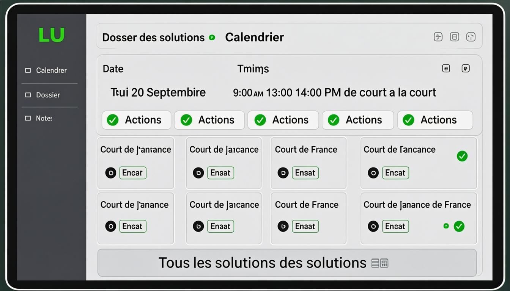

Chapitre 1
Introduction
Bienvenue dans le manuel d'utilisation de JurisLink pour le profil Avocat. En tant qu'avocat, vous êtes au cœur de l'activité juridique du cabinet. Vous disposez d'un accès étendu pour gérer vos dossiers, vos clients, vos documents et vos tâches. Certaines fonctionnalités administratives et financières sont toutefois restreintes.
Résumé de vos capacités :
✓Dossiers & ClientsConsultation, création, modification et export. Suppression non autorisée.
✓DocumentsAccès complet : consultation, création, modification, suppression et export.
✓FacturesConsultation et export uniquement. Pas de création ni de modification de factures.
✓Tâches, Événements, Temps passésConsultation, création et modification. Export pour les tâches.
✓RapportsConsultation et export uniquement. Pas de création de rapports personnalisés.
Restrictions principales
Vous n'avez pas accès à : la gestion des utilisateurs, les paramètres du cabinet, les journaux d'audit, les rôles et abonnements. Vous ne pouvez ni créer ni modifier des factures (consultation et export uniquement).
Chapitre 2
Premiers pas
Connexion à l'application
1Accéder à l'écran de connexionLancez JurisLink depuis votre navigateur. L'écran de connexion s'affiche avec les champs Identifiant et Mot de passe.
2Saisir vos identifiantsEntrez votre identifiant professionnel et votre mot de passe. Ces identifiants vous sont fournis par l'administrateur du cabinet.
3Valider la connexionCliquez sur « Se connecter ». Vous accédez au tableau de bord Avocat, centré sur vos dossiers et vos tâches.
Présentation du tableau de bord
Le tableau de bord Avocat affiche vos dossiers en cours, vos tâches à traiter, vos prochains événements à l'agenda et un résumé de vos temps passés récents. Il est conçu pour vous donner une vue d'ensemble rapide de votre activité.

Figure 1 — Tableau de bord de l'Avocat
Navigation dans le menu latéral
Le menu latéral donne accès à : Dossiers, Clients, Documents, Tâches, Agenda, Messages et Temps passés. Les sections Factures et Rapports sont accessibles en lecture seule. Les sections Utilisateurs, Paramètres et Audit ne sont pas visibles.